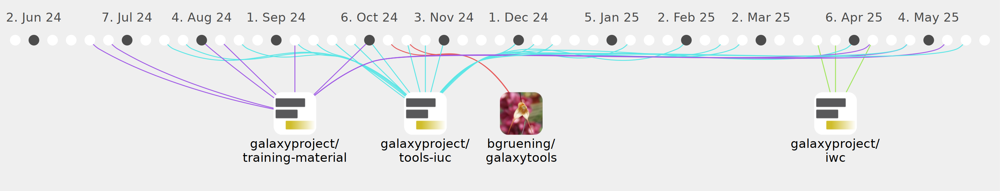

paulzierep

Commits all-time: 244
Commits last year: 124

(58)
- efa1fd4
- 574cb8c
- ad14947
- 9ed0c30
- 0bb6200
- 648be65
- b9312b7
- 750e246
- bc882c3
- d033a59
- d1fc52a
- 31b02f0
- 0d9bb1d
- 7c27da4
- 84b7448
- 2f8cb60
- 31aea66
- da3d6c2
- 90ee141
- ab43721
- 1213f39
- b8a3358
- 4eb49d0
- 1f99467
- 75cbfc6
- ffcd1f7
- c7e904f
- 85dd2c0
- cf9b946
- 1d60173
- d929359
- ddb1d64
- dabc082
- f556e1b
- 0094c93
- f79c79f
- 1b335f1
- d86e487
- 48aeb88
- 6e78a45
- d20cf03
- c5f616c
- e60c159
- b3a1017
- 6e55ff9
- a895460
- 5cabf8f
- ed1d307
- 9906d5c
- 7312feb
- b746788
- f2dd3c8
- 8e52390
- f32c3d9
- 069a351
- cd4128b
- beac47b
- 993f6e3
(44)
- e5170b4
- 8fc03b1
- 1203138
- ccc05b6
- 7e2258f
- 374441d
- 1b99831
- b6379cb
- 4e88ecb
- 9879b05
- 7c2b05b
- adfc9a4
- 39ff245
- a887002
- b765e46
- c154847
- a4cec5d
- ac0f671
- cd4066f
- 1441aa1
- c0ff830
- d448f80
- 7e39380
- e548ec8
- c64e21a
- a738a75
- ee56bcc
- e154adc
- b720df5
- 460ba3b
- 61a6310
- f5c23bb
- 9844cfb
- effcc9e
- 4a960af
- fcc028d
- eb063f7
- 4571310
- a9e61fd
- 1b1de0e
- 58b4c4a
- 0286a06
- c9858d0
- 047a1de
(20)
(2)